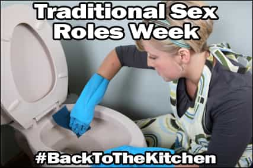

Daryush "Roosh" Valizadeh created ROK in October 2012. You can visit his blog at RooshV.com or follow him on Twitter and Facebook.



I’m proud to announce the launch of Traditional Sex Roles week. For the next seven days, we will be offering you over a dozen articles that explore the societal benefits and implications of having traditional sex roles.
In the most simplest terms, it is when men are masculine and women are feminine. Nature (or god) gave men a unique set of strengths and weaknesses while giving women a different set of strengths and weaknesses. Traditional sex roles allows both sexes to logically maximize their strengths in ways that benefit both the individual and society. Let’s look at some simple examples:
Despite what modern progressives may attempt to brainwash us to believe, the answer to any of the above with “both sexes” is incorrect and dishonest. While we can take a baby girl at birth and raise her to be a Spartan warrior with immense effort and investment, it will be ten times easier to make her an accomplished mother instead. There are limitations placed within our genetics that make the pursuit of another sex’s innate advantages an exercise in futility.
This does not mean a man can’t be good nurse, for example, but unless he has some type of predisposition to caretaking, nothing is proved by forcing him to undertake such a role. The same logic holds by pushing non-analytically inclined woman into a field like physics, where she will waste university and societal resources before inevitably dropping out to become a housewife, something she was inclined to do from the start.
They are the glue that holds society together. Consider that the “equality” regime has been in place for less than 50 years, a blink of an eye in the course of human existence. Up to the feminist revolution, having roles based on traditional fabric was wildly successful is allowing humans to colonize the Earth via the mechanism of a nuclear family. Equality beliefs have not proved that it is any way superior for humans, and if plummeting birth rates among Western nations are any indication, it may be a principal contributor to the relative cultural decline of the West behind those nations—particularly in the Middle East—who retain their traditional sex roles and out-breed those who don’t. In other words, feminists on Tumblr will have a decreasing audience for their social justice rantings while women in the Middle East are busy filling their home with children that propagate their own culture and way of life.
But who cares about society? Will it really affect you if birth rates plummet in America? Probably not, but if you take a minute to zoom in on the individual level, the eradication of traditional sex roles is clearly harming both sexes. Happiness surveys show that Western women are unhappier than ever, even if they have a lucrative office job or own an iPhone that provides then with nonstop entertainment and thirsty suitors. It turns out that brainwashing them to live the program of a man by achieving a career and accumulating lots of money has not made them better off.
At the same time, men are finding that their traditional strength of being a provider is becoming associated with loserdom. The resulting punishment is either no sex or a relationship with a woman who had dozens of sexual partners beforehand, with a 50% chance of her filing a YOLO divorce. Such an unforgiving assault on traditional masculinity is leaving men confused, frustrated, and unsure of their place in society. In the past, a man could marry a good woman from not much more than having a good job. He could come home to a wife who prepares his cigar and whiskey beverage while cooking a homemade meal. But not anymore. Women, now trained to act like men, are too busy with their own jobs to care about dedicating themselves to a man. Instead, they seek out aloof cads for hedonistic pleasure while the provider men become addicted to videos game or porn.
Some men are sexually cashing in on these times. I look at myself, a man who has fornicated with a huge pile of women, most of them within hours of meeting. Could I have done this in the 1950s? Probably not. But even in spite of the ease which I was able to lay American women in Washington DC (after years of game training), it turns out that brainwashing women to act like men with little dicks does not make them pleasant to have as girlfriends who you can trust. So yes, I banged a lot, but where’s the connection? Where’s the pair bonding? My relationships in America were ultimately unsatisfying.
Every player will tell you that indiscriminate banging does lose its luster after a few years, and when it does, this man would be a fool to settle down with a woman who can order an artisanal burrito with her smartphone app but not remove mold from her bathroom tile or cook a healthy meal. Thankfully, I’ve had the economic means to escape America to pursue mini-relationships in foreign countries with women who accept their feminine role and my masculine dominance over them.
We get frequent accusations that we are a “troll” website. The radio band of discussion has become so limited in the West that possessing an opinion that is on the other end of the spectrum is simply dismissed outright as false. It’s a lot easier to levy this label upon us instead of using the following style of rebuttal: “I disagree with this because <insert logic here>.” Speaking for myself and all the ROK writers, we truly believe what we write. In fact, if you’ve been following my work for some years, you will see that I indeed live to the letter of what I publish.
In the end, ROK will grow and these ideas will spread for one simple reason: we provide answers for men. In a world where traditional sex roles and masculinity are being swept under the rug as if they had never existed, we give men the tools to get what they want out of life. Our enemies offer no tools, just shame and petty “oh the poor men” insults. They have zero answers for men. Their movement is specifically geared to empower women at all costs, and in the zero-sum game between the sexes, men come out the big losers. I hope Traditional Sex Roles Week puts a halt to that, and I implore you to consider our viewpoints with an open mind. We look forward to your comments on the blog or on Twitter with the hashtag #BackToTheKitchen.
Read Next: Are You A Traditional Conservative But Don’t Realize It?